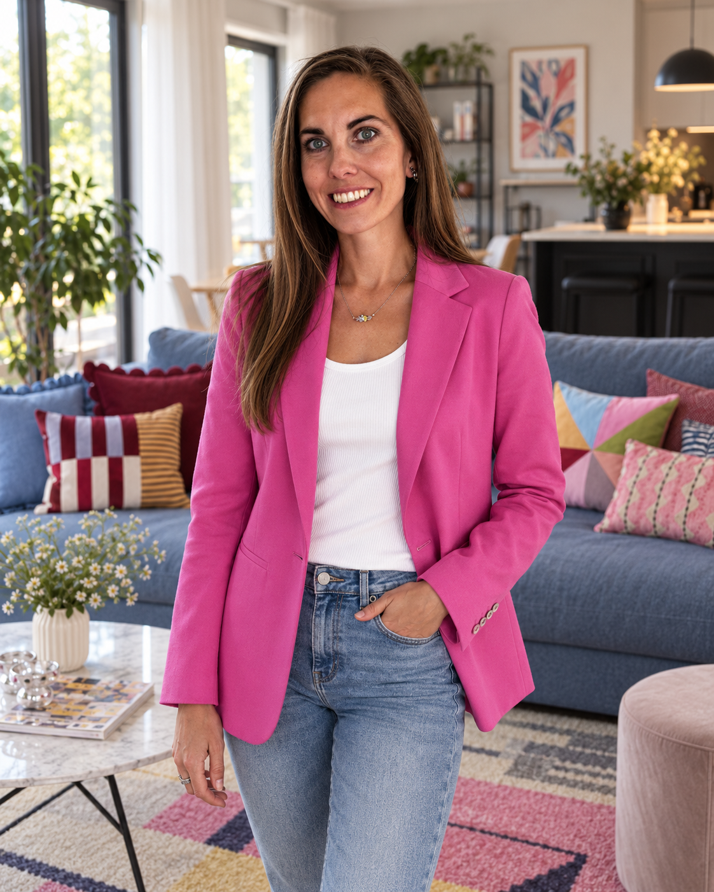

Om mig
Ett vackert hem ska också vara härligt att leva i

Hej och välkommen!
Jag heter Jannika och är grundare av Heminredningscoachen. Jag är certifierad inredare och utbildad projektledare inom möbel- och inredningsbranschen med fokus på hållbarhet.
Jag älskar inredning, arkitektur, färg och form. Men för mig handlar inredning om mer än att skapa något som är vackert att titta på. Jag tror att våra hem har stor betydelse för hur vi trivs och mår i vardagen.
Hemmet ska vara en plats där det känns skönt att komma hem. Där vi kan koppla av, hämta ny energi, inspireras och umgås med dem vi tycker om.
Jag tycker att alla förtjänar ett hem att trivas i.
När form och funktion möts
För mig är det lika viktigt att ett hem fungerar bra som att det är vackert.
Hur vi möblerar, organiserar och förvarar våra saker påverkar hur vi använder hemmet. När det finns genomtänkta lösningar och en naturlig plats för det vi behöver blir vardagen enklare.
Det betyder inte att allt alltid måste vara perfekt undanplockat. Ett hem ska fungera för livet som pågår där, med allt vad det innebär.
Samtidigt ska det finnas plats för färg, form och personliga detaljer som gör hemmet inspirerande och trivsamt.
Jag tror på inredning där det praktiska och det estetiska samspelar, så att vi inte behöver välja mellan ett välfungerande och ett vackert hem.
Från ett stort intresse till Heminredningscoachen
Mitt intresse för inredning har funnits länge och har också fått ta stor plats i mitt eget liv.
Tillsammans med min man har jag ritat, designat och byggt vårt nuvarande hus. Tidigare bodde vi i ett nyproducerat radhus där vi gjorde tillval och planerade inredningen.
De erfarenheterna har lärt mig mycket om hur viktigt det är att tänka på både helheten och detaljerna, och att låta hemmets funktion vara en naturlig del av planeringen.
Med tiden växte viljan att göra mer av mitt intresse. Jag ville arbeta med något som känns kreativt, inspirerande och meningsfullt. Eftersom jag också tycker om människor och att hjälpa andra kändes inredning som ett naturligt val.
Så föddes Heminredningscoachen.
Personlig och hållbar inredning
Jag tycker inte att ett hem behöver följa en viss stil eller de senaste trenderna för att vara fint.
Vi har olika smak, behov och sätt att leva. Därför vill jag hjälpa dig att hitta lösningar som passar just dig och ditt hem.
Hållbarhet är också en viktig del av mitt sätt att tänka. Jag tycker om att ta vara på möbler och detaljer som redan finns och se hur de kan användas på nya sätt.
Ibland behövs något nytt, men jag tror på genomtänkta val som fungerar både idag och på längre sikt.
Inspiration finns överallt
Jag hämtar gärna inspiration från resor, nya städer, arkitektur, konst, musik och kultur. Jag älskar vackra miljöer, god mat, färger och detaljer – och har en särskild förkärlek för allt som glittrar!
Hemma delar jag vardagen med min man och våra tre barn. Familjelivet påminner mig ständigt om hur viktigt det är att ett hem fungerar i praktiken och samtidigt har plats för det som gör livet härligt.
Vill du ha hjälp med ditt hem?
Med Heminredningscoachen vill jag hjälpa dig att hitta din personliga stil, lösa inredningsproblem och skapa ett hem där både form och funktion får ta plats.
Ett hem som passar dig, din vardag och det du tycker om.
Utforska mina tjänster